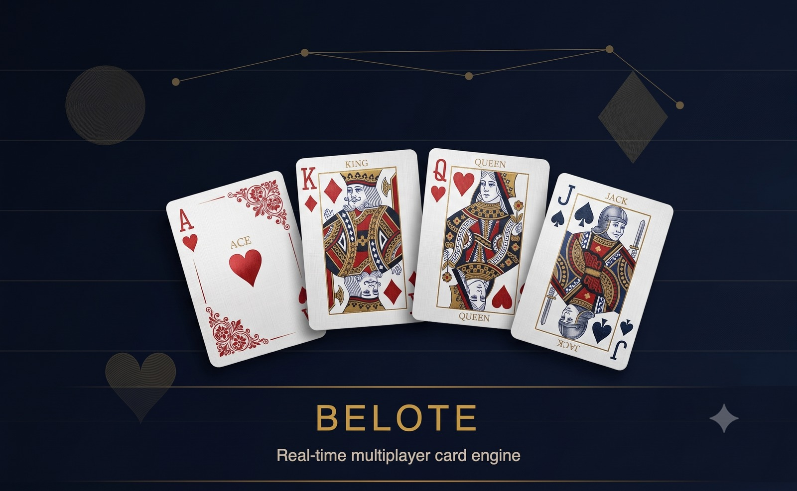

1. Platform Scope & Game Mechanics
Belote is France's premier partnership trick-taking card game, played by four players in two fixed partnerships (North-South vs. East-West) using a specialized 32-card deck. Each match combines strategic bidding, mandatory trick-taking hierarchies, and contract fulfillment.
The game requires strict server-authoritative enforcement: all card shuffling, hand deals, trump determinations, and move legality are computed exclusively on the backend to eliminate client-side cheating or tampering.
2. Headless Microservice Integration (Gamify API)
The Belote engine was built as a headless game service microservice designed to integrate into an external media and gaming portal. Rather than managing player accounts and billing directly:
- Session Authentication: When a player joins a table, the backend validates the user's JWT launch token against the client's central Gamify API to obtain player profiles, wallet balances, and game permissions.
- Bi-Directional Financial Sync: Tournament entry fees, in-game wagers, and final prize allocations are synchronized via RESTful webhooks to the client's central ledger with automated idempotency keys.
- Decoupled Scalability: This architecture enabled the client to retain complete ownership over their user database while delegating all real-time game state synchronization to our Node.js cluster.
3. Complete Hand Lifecycle & State Workflow
4. Server-Authoritative Move Validation & Edge Cases
Every card played is validated against the official rules of French Belote:
- Leading Suit Compliance: Players must play a card matching the leading suit of the trick if one exists in their hand.
- Mandatory Overtrumping (Monter à l'atout): If a player cannot follow suit and plays a trump card, they must play a higher trump than any previously played trump if available. Under-trumping is disallowed unless the player has no higher trump.
- Belote / Rebelote State Tracking: If a player holds both King and Queen of the trump suit, the server tracks the pair. Playing the first card triggers the "Belote" announcement, and playing the second triggers "Rebelote", awarding 20 uncancelable bonus points.
5. Heuristic AI Bot Engine & Reconnection Recovery
Probabilistic Hand Evaluation
During the bidding phase, bots analyze card strength based on high-value trump holdings (Jack and 9 counts). If the expected trick capture probability crosses a predefined threshold, the bot commits to the contract.
Partner-Aware Trick Play
The bot monitors whether its human or bot partner currently holds trick authority. If the partner is winning, the bot sluffs low-value off-suit cards. If an opponent leads, the bot plays the minimal winning card to secure the trick.
Humanized Latency Simulation
To provide a natural multiplayer experience, bot turns incorporate randomized Gaussian delays (800ms–2,200ms), preventing unnatural instantaneous play.
Zero-Loss Reconnection Architecture
If a player experiences mobile disconnects, the server persists the active table state in Redis and MongoDB. Upon reconnect, the socket re-authenticates and seamlessly receives the current trick state, hand cards, and scores without forfeiting the round.
6. Full Technology Stack
Developing Card Engines or Game Portals?
Whether you need server-authoritative card logic, bot AI, or third-party gaming engine integrations, let's connect.
Get in Touch with Chetan